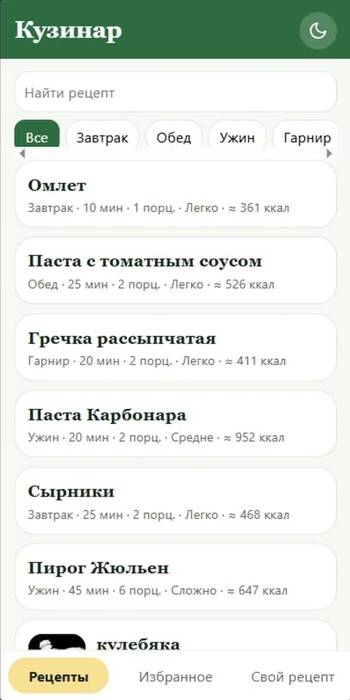
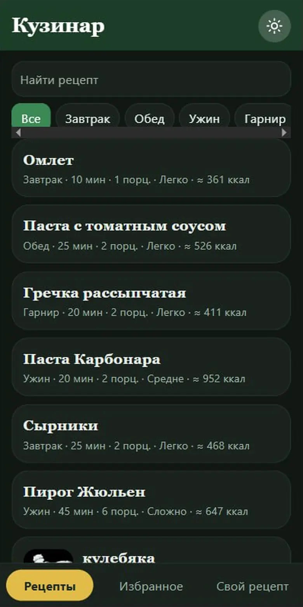
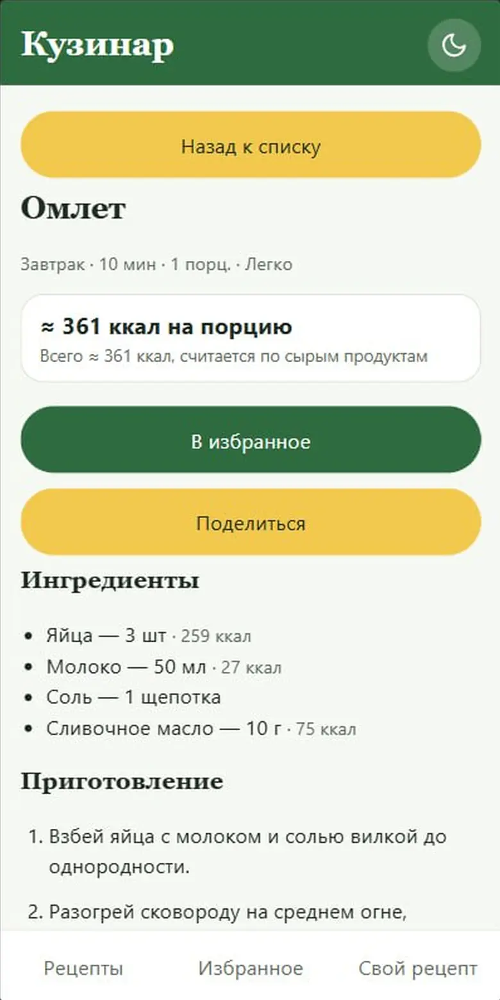
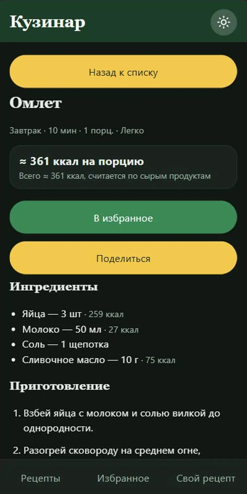
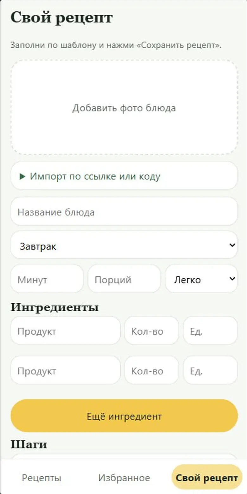
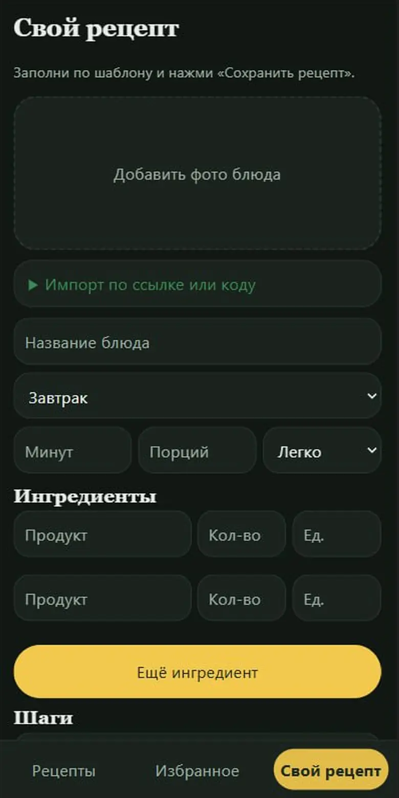

Рецепты на каждый день уже внутри
Омлет, паста, гречка, карбонара, сырники, пирог жюльен. Ищите по названию или фильтруйте по категории, а любимые блюда складывайте в избранное.
Вы умеете готовить, но не помните, сколько класть и в каком порядке. Кузинар помнит это за вас: рецепты на каждый день уже внутри, свои добавляются по шаблону, а калории считаются сами.


Дело не в том, что вы не умеете готовить. Дело в том, что рецепт опять вылетел из головы. Пропорции теста, время для макарон, порядок шагов. Кузинар хранит всё это в одном месте, в том виде, в каком удобно читать у плиты.
Всё, что нужно у плиты, и ничего лишнего.
Омлет, паста, гречка, карбонара, сырники, пирог жюльен. Ищите по названию или фильтруйте по категории, а любимые блюда складывайте в избранное.
Для каждого блюда видно калорийность порции и каждого ингредиента.
Название, категория, время, порции, сложность, ингредиенты, шаги и фото блюда. Все записи выглядят одинаково.
Начните вводить ингредиент, и Кузинар предложит продукт из базы на 231 позицию и сразу покажет калории. Нет продукта в базе? Укажите калории на 100 г.
Отправляйте рецепт текстом, ссылкой, картинкой с фото или файлом. Получатель добавит его себе одним действием.
Без аккаунта и регистрации. Ваши рецепты хранятся только на устройстве, а после первого запуска приложение открывается и без интернета. Тёмная тема переключается кнопкой в шапке.
Карточки пружинят при нажатии, списки появляются по очереди. Если на телефоне отключена анимация, Кузинар это учтёт.
Калорийность порции, ингредиенты с калориями и шаги по порядку. Никаких лишних переходов.


Заполните шаблон: пока вы вводите ингредиенты, под ними появляется подсказка с калорийностью.


Файл .apk лежит в разделе Releases на GitHub. Скачайте, установите и расскажите, чего не хватает.
Ищем последнюю версию…
Начинаем с Android, потом расширяемся.
Файл .apk в Releases и веб-версия в браузере. Основа готова, остальное дорабатывается по отзывам.
Больше готовых рецептов и доработки по вашим замечаниям.
Google Play, RuStore и App Store, чтобы устанавливать Кузинар в пару касаний.
Не нашли ответ? Напишите в Issues на GitHub, и мы добавим его сюда.
Кузинар — книга рецептов для тех, кто постоянно забывает рецепты. Готовить вы умеете, но не помните, сколько класть и в каком порядке. Приложение хранит рецепты, чтобы их не нужно было держать в голове.
Нет, и не пытается. Он решает другую задачу: помнить рецепты за вас. Если вы понимаете, что такое «обжарить лук», но каждый раз гуглите пропорции, вам сюда.
В альфе шесть готовых блюд на каждый день: омлет, паста с томатным соусом, гречка рассыпчатая, паста карбонара, сырники и пирог жюльен. Их можно искать и фильтровать по категориям: завтрак, обед, ужин, гарнир, десерт. Набор будет расти.
Откройте вкладку «Свой рецепт» и заполните шаблон: название, категория, время, число порций, сложность, ингредиенты и шаги. По желанию добавьте фото блюда.
Только на вашем телефоне. Аккаунта и регистрации нет, рецепты никуда не отправляются. Если удалить приложение или очистить его данные, рецепты исчезнут вместе с ними, поэтому важные лучше сохранить файлом через «Поделиться».
Кузинар считает только калории, без белков, жиров и углеводов. Приложение находит ингредиенты в своей базе продуктов, а на экране рецепта показывает калорийность порции и каждого ингредиента. Значения ориентировочные и считаются по сырым продуктам. Если продукта нет в базе, в своём рецепте можно указать калории на 100 г.
Да. Рецепт можно отправить текстом, ссылкой, текстом с фото или файлом. Ссылка откроется в Кузинаре и добавит рецепт сама. Принять рецепт можно по ссылке, коду или файлу: «Свой рецепт» и затем «Импорт».
Да. После первого запуска приложение сохраняет нужные файлы на телефоне, и рецепты открываются без сети.
Скачайте файл .apk со страницы Releases, откройте его на телефоне, разрешите установку из этого источника (Android спросит сам) и нажмите «Установить». Затем запустите Кузинар с экрана приложений.
Ставьте файл только со страницы Releases официального репозитория этого сайта: другим копиям доверять не стоит. Предупреждение Android о неизвестных источниках появляется для любого приложения вне Google Play. После установки разрешение можно снова отключить в настройках.
Пока нет. Сейчас доступна альфа-версия в виде .apk для Android, а в браузере приложение можно открыть на любом устройстве. В планах релизы в App Store, Google Play и RuStore, сроков пока нет.
Это ранний тест: основа уже работает, но возможны ошибки, а функции и внешний вид будут меняться. Если что-то сломалось или неудобно, напишите об этом.
Откройте обращение в разделе Issues репозитория на GitHub: опишите, что произошло, на каком телефоне и в какой версии.
Фото к своим рецептам уже можно добавлять. Короткие видео мы обдумываем, но в альфе их нет.